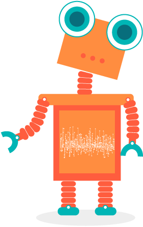
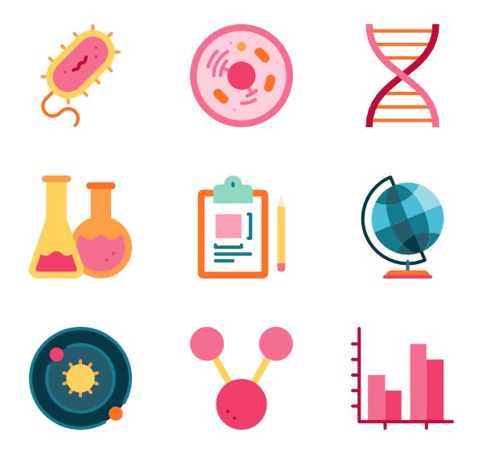

旋转木马
（Merry-Go-Round）
schedule30-45 分钟
stars初级（Beginner）
face3-5 年级
一. 场景（Connect）
山姆（Sam）和莎莉（Sally）喜欢玩集市上的旋转木马，转来转去，真是太有趣了。旋转木马的转动（Turn）需要哪些机械部件？我们来构建一个旋转木马吧！
二. 构建（Build）


一只手推动小车，另一只手转动方向盘。
三. 思考（Contemplate）
3.1. 手推车的移动（Move）和转动（Turn）需要哪些机械装置？

3.1. 手推车的移动（Move）和转动（Turn）需要哪些机械装置？
- 【车轮（Wheel）】用不同材料制成的圆形滚动物体。包括外圈、辐条和中心轴。功能是用来减少与接触面的磨擦系数。
- 【车轴（Axle）】穿在车轮中间的圆柱形或方形物体。功能是用来传递运动、扭矩或弯矩。
- 【方向盘（Steering Wheel）】操纵车子行驶方向的轮状装置。功能是将驾驶员作用到转向盘边缘上的力转变为转矩后传递给转向轴。
3.2. 让手推车直线行驶、转弯行驶，体会两者差异？

3.2. 让手推车直线行驶、转弯行驶，体会两者差异？
- 【直线行驶】很容易推动车子行驶。
- 【转弯行驶】推动车子、转动方向盘都很费力。因为前两车轮不能以不同的速度转动，转弯时，一个车轮总是打滑（Skid）。
3.3. 重新构建模型（Rebuild）


一只手推动小车，另一只手转动方向盘。
3.4. 观察、测试

- 【观察】模型一和模型二的区别在哪？
- 【测试】模型一和模型二的驾驶体验有何差异？
结论（Conclusion）

- 【观察】模型一和模型二的区别在哪？
【结论】前轮车轴不同，模型一使用单个车轴（Single Axle）连接两个车轮，模型二使用两个独立车轴（Separate Axles）分别连接两个车轮。 - 【测试】模型一和模型二的驾驶体验有何差异？
【结论】转弯驾驶时，模型一很费力，模型二很省力。这是因为模型二的两个独立车轴可以让两个前轮以不同的速度转动。
3.5. 总结（Summary）

- 同学们，这堂课我们学习了车轮、车轴和摩擦力的基础知识，并了解到车子转弯时，让前轮以不同速度转动，车子可以运行得更流畅。
四. 分享（Share）

- 与手推车合张影吧！
- 把对手推车的想法写下来！
- 同学们，分享你的创造成果吧！
五. 扩展（Extend）
- 【改装后车轮】更换后车轴为独立车轴、更换不同的后车轮，观察效果，并做记录。
- 【画车轮和车轴】发现生活中使用的车轮和车轴，并试着把它画出来！